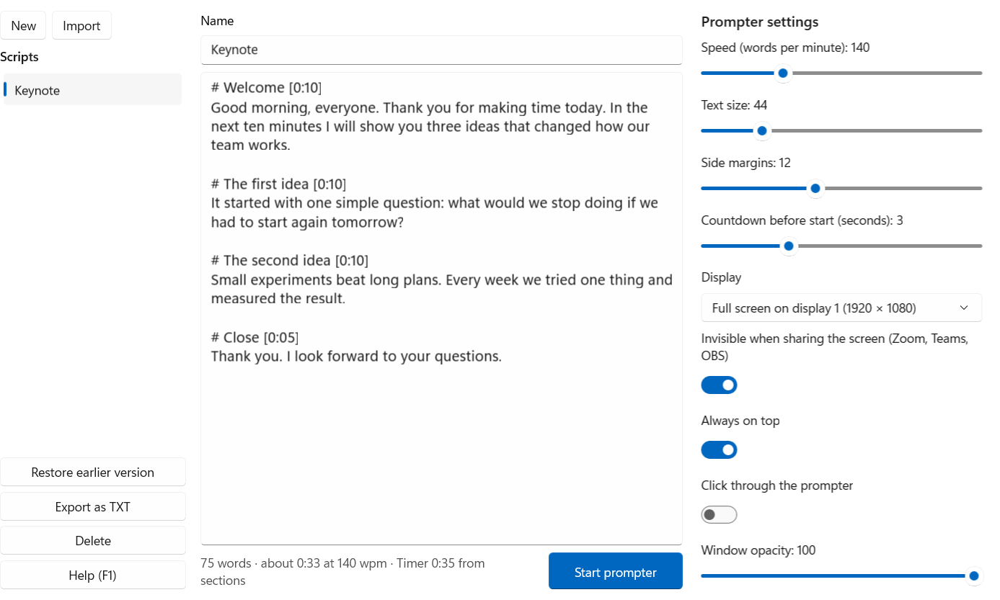

You read. Your audience never sees it.
SpeakAnchor shows your script right below the webcam and stays hidden when you share your screen. With a speaker timer, for Windows.
Schematic illustration. Tested sharing the entire screen in Teams and Zoom, and recording with OBS and CapCut.
Everything for a talk without stumbles
Hidden when you share
Windows keeps the windows out of the screen capture. You see the text, everyone else sees your slides.
Speaker timer with traffic light
Remaining time at a glance, and for each section whether you are ahead of or behind plan.
Speed in words per minute
Smooth scrolling you can adjust at any time. A mouse click never stops the text by accident.
Clicker and shortcuts
Move between sections with a presenter clicker. Ctrl+Alt+Space starts and pauses from any app.
Phone as a remote
Scan the QR code and you are set. It uses a PIN, stays on your local network and needs no app.
Your text, your formats
Import TXT, Markdown, Word and PDF with a text layer. Saved automatically, with earlier versions.
Mirroring for prompter glass
Horizontal and vertical, plus a reading line, full screen on a second monitor and adjustable opacity.
Stays on your PC
No account, no ads, no tracking. Your scripts do not leave your computer.
Click through
Ctrl+Alt+K sends clicks through the prompter to the app behind it, so you can use your slides without moving the window.

What it does, and what it doesn't
Hiding applies to screen capture, which means sharing and recording.
- Projectors and mirrored monitors show the prompter if it is on that picture.
- In that case, put it on a monitor that is not mirrored.
- A camera pointed at your screen will see it too, of course.
The main shortcuts
| Space | Start and pause |
| ← → | Speed |
| Page Up/Down | Sections, also by clicker |
| T | Stop the timer |
| Ctrl+Alt+Space | Start and pause from any app |
Buy once, done
One-time purchase in the Microsoft Store, no subscription. The price may vary by country.
Try it free first
- The trial includes every feature.
- The prompter runs for 5 minutes per start, and you can restart as often as you like.
- Buying removes the limit. Your scripts stay.
Common questions
Can others really not see the prompter?
We tested sharing the entire screen in Teams and Zoom, and recording with OBS and CapCut. Try it in the trial with a second device before you rely on it.
Why does the trial stop after 5 minutes?
It lets you try everything. For a full talk you need the full version.
Do I need internet?
No. The app works offline. Only the Microsoft Store needs internet for purchase and updates, and the phone remote uses your local network.
Which Windows version do I need?
Windows 10 version 2004 or later, or Windows 11, on x64 or ARM64.
Where are my scripts stored?
As plain text files in your local app data folder. You can export any script as TXT.
Questions or problems? Write to mip@gmx.biz.